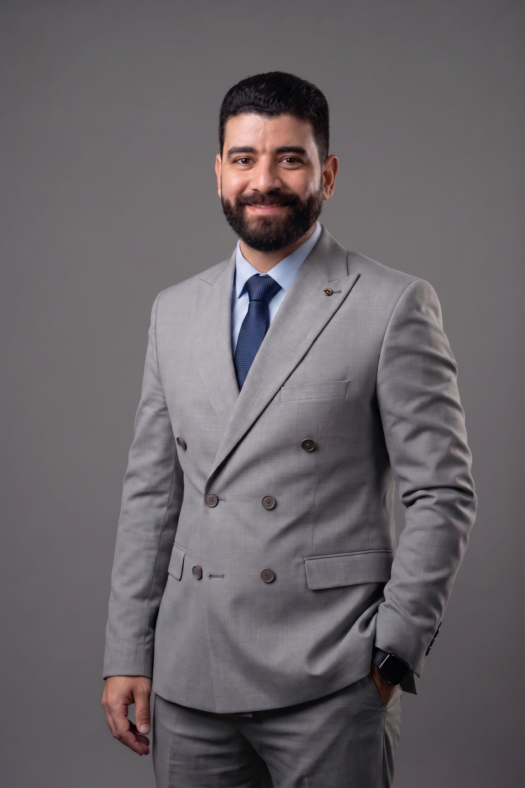

FINANCE LEADERSHIP • FP&A • TRANSFORMATION
AYMAN ESAM
Group Financial Controller. Strategic Finance Partner. Transformation Driver.
Finance leader in Saudi Arabia helping management turn numbers into decisions through disciplined financial control, FP&A, cash flow management, performance analysis and finance transformation.
FP&ABudgeting & ForecastingCash FlowIFRSERP & Automation

SAR 700M+Annual sales under financial oversight
13+ YearsFinance & accounting experience
SAR 700M+Annual sales under financial oversight
13+ YearsFinance & accounting experience
6 CompaniesCurrent group oversight
7+ SectorsCross-industry exposure
CFM™ · CertIFR®Professional credentials

About Me
Finance as a decision engine, not only a reporting function.
I work across financial control, planning, performance management and transformation. My focus is to build finance functions that are reliable, fast, commercially aware and capable of supporting management with clear decisions.
A strong finance function should explain what happened, why it happened, what is likely to happen next, and which action management should take.
Industry Exposure
Finance experience across diverse business models.
Telecommunications
Travel & Tourism
Retail
Manufacturing
Business Services
Real Estate
Construction
Selected Organizations
Businesses and organizations I have supported across my career.
Professional experience and finance support across telecommunications, travel, retail, manufacturing, business services, real estate, construction, hospitality and food & beverage.